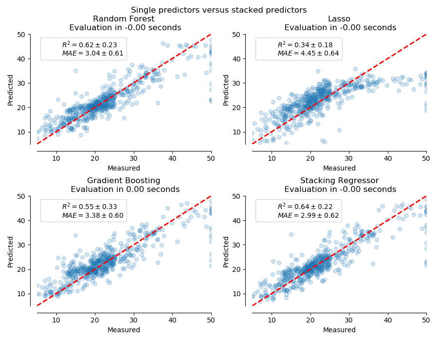

Note
Click here to download the full example code or run this example in your browser via Binder
Combine predictors using stacking¶
Stacking refers to a method to blend estimators. In this strategy, some estimators are individually fitted on some training data while a final estimator is trained using the stacked predictions of these base estimators.
In this example, we illustrate the use case in which different regressors are stacked together and a final linear penalized regressor is used to output the prediction. We compare the performance of each individual regressor with the stacking strategy. Stacking slightly improves the overall performance.
print(__doc__)
# Authors: Guillaume Lemaitre <g.lemaitre58@gmail.com>
# License: BSD 3 clause
The function plot_regression_results is used to plot the predicted and
true targets.
import matplotlib.pyplot as plt
def plot_regression_results(ax, y_true, y_pred, title, scores, elapsed_time):
"""Scatter plot of the predicted vs true targets."""
ax.plot([y_true.min(), y_true.max()],
[y_true.min(), y_true.max()],
'--r', linewidth=2)
ax.scatter(y_true, y_pred, alpha=0.2)
ax.spines['top'].set_visible(False)
ax.spines['right'].set_visible(False)
ax.get_xaxis().tick_bottom()
ax.get_yaxis().tick_left()
ax.spines['left'].set_position(('outward', 10))
ax.spines['bottom'].set_position(('outward', 10))
ax.set_xlim([y_true.min(), y_true.max()])
ax.set_ylim([y_true.min(), y_true.max()])
ax.set_xlabel('Measured')
ax.set_ylabel('Predicted')
extra = plt.Rectangle((0, 0), 0, 0, fc="w", fill=False,
edgecolor='none', linewidth=0)
ax.legend([extra], [scores], loc='upper left')
title = title + '\n Evaluation in {:.2f} seconds'.format(elapsed_time)
ax.set_title(title)
Stack of predictors on a single data set¶
It is sometimes tedious to find the model which will best perform on a given dataset. Stacking provide an alternative by combining the outputs of several learners, without the need to choose a model specifically. The performance of stacking is usually close to the best model and sometimes it can outperform the prediction performance of each individual model.
Here, we combine 3 learners (linear and non-linear) and use a ridge regressor to combine their outputs together.
from sklearn.ensemble import StackingRegressor
from sklearn.ensemble import RandomForestRegressor
from sklearn.experimental import enable_hist_gradient_boosting # noqa
from sklearn.ensemble import HistGradientBoostingRegressor
from sklearn.linear_model import LassoCV
from sklearn.linear_model import RidgeCV
estimators = [
('Random Forest', RandomForestRegressor(random_state=42)),
('Lasso', LassoCV()),
('Gradient Boosting', HistGradientBoostingRegressor(random_state=0))
]
stacking_regressor = StackingRegressor(
estimators=estimators, final_estimator=RidgeCV()
)
We used the Boston data set (prediction of house prices). We check the performance of each individual predictor as well as the stack of the regressors.
import time
import numpy as np
from sklearn.datasets import load_boston
from sklearn.model_selection import cross_validate, cross_val_predict
X, y = load_boston(return_X_y=True)
fig, axs = plt.subplots(2, 2, figsize=(9, 7))
axs = np.ravel(axs)
for ax, (name, est) in zip(axs, estimators + [('Stacking Regressor',
stacking_regressor)]):
start_time = time.time()
score = cross_validate(est, X, y,
scoring=['r2', 'neg_mean_absolute_error'],
n_jobs=-1, verbose=0)
elapsed_time = time.time() - time.time()
y_pred = cross_val_predict(est, X, y, n_jobs=-1, verbose=0)
plot_regression_results(
ax, y, y_pred,
name,
(r'$R^2={:.2f} \pm {:.2f}$' + '\n' + r'$MAE={:.2f} \pm {:.2f}$')
.format(np.mean(score['test_r2']),
np.std(score['test_r2']),
-np.mean(score['test_neg_mean_absolute_error']),
np.std(score['test_neg_mean_absolute_error'])),
elapsed_time)
plt.suptitle('Single predictors versus stacked predictors')
plt.tight_layout()
plt.subplots_adjust(top=0.9)
plt.show()

The stacked regressor will combine the strengths of the different regressors. However, we also see that training the stacked regressor is much more computationally expensive.
Total running time of the script: ( 0 minutes 6.758 seconds)
Estimated memory usage: 8 MB